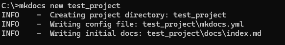
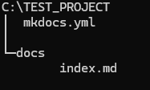
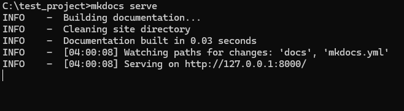
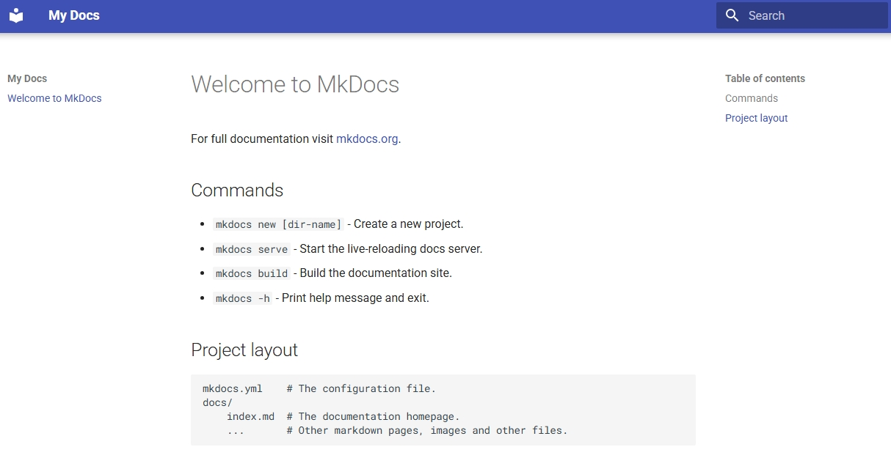
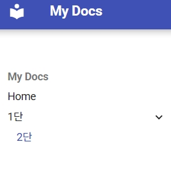

문서 생성하기
프로젝트 생성
방법1) 원하는 경로에 접근후 생성
mkdocs new test_project

방법2) 절대 경로로 생성
mkdocs new C:/test_project
프로젝트 생성 확인

서버 실행
서버실행시 기본값은 localhost:8000이다.
ip 및 port를 변경하고 싶으면 -a 옵션을 추가하면 된다.
mkdocs serve -a 127.0.0.1:8001
방법1) 프로젝트 경로로 접근후 실행
mkdocs serve

방법2) 절대 경로로 실행
mkdocs serve -f C:\test_project\mkdocs.yml
서버 실행 확인
Material for MkDocs 적용하기
Material for MkDocs는 한국어를 지원하므로 다음과 같이 작성하면 된다. 
페이지 추가하기
*.md파일 생성
프로젝트의 docs디렉터리 안에 md확장자 파일을 생성한다.
예시로는 test.md파일을 생성했다.
이미지와 같이 자동으로 메뉴에 추가되었음을 알 수 있다.
메뉴 편집
메뉴의 순서나 이름을 변경하고 싶으면 mkdocs.yml파일을 수정하면 된다.
다음과 같이 공백에 유의하여 작성하며, n단으로 이루어 지는 메뉴가 구성된다.
